Inženýrské a vodohospodářské stavby, výstavba kanalizací a vodovodů, ČOV a certifikované sanace železobetonových konstrukcí s tradicí od roku 1991
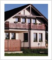
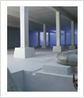
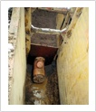
Veškeré autentické informace, historie, provozní údaje a identifikační data naší společnosti.
Společnost MYFA Olomouc s.r.o. vznikla v roce 1999 transformací ze sdružení podnikatelů Ing. Pavel Myšák a Martin Faltýnek, které na stavebním trhu úspěšně působilo již od roku 1991. Sídlíme ve vlastním areálu v Olomouci - Chomoutově (Dalimilova 74/53).
Specializujeme se na komplexní realizaci vodohospodářských a inženýrských staveb: výstavbu a rekonstrukce stokových sítí a kanalizací (gravitačních, tlakových i podtlakových), vodovodních řadů a vodojemů, čistíren odpadních vod (ČOV), čerpacích stanic a terénních či zemních prací.
Významným pilířem naší činnosti jsou odborné sanace betonových a železobetonových konstrukcí (mostů, propustků, vodojemů, jímek a ČOV) certifikovanými sanačními systémy MAPEI. Společnost je držitelem certifikátu ČSN EN ISO 9001:2009 a autorizace ČKAIT pro vodohospodářské stavby (Ing. Pavel Myšák).
| Obchodní firma | MYFA Olomouc s.r.o. |
| Sídlo společnosti | Dalimilova 74/53, 783 35 Olomouc - Chomoutov |
| IČO / DIČ | 25838047 / CZ25838047 |
| Spisová značka | C 21162 vedená u Krajského soudu v Ostravě |
| Jednatelé společnosti | Ing. Pavel Myšák (Autorizovaný inženýr ČKAIT pro vodohospodářské stavby) a Martin Faltýnek |
| Telefon / E-mail | +420 585 22 40 77 | myfa@myfa-olomouc.cz |
Zahájení podnikatelské činnosti v oboru vodohospodářských a inženýrských staveb na Olomoucku.
Zápis společnosti do obchodního rejstříku u Krajského soudu v Ostravě, oddíl C, vložka 21162 (IČO 25838047).
Zavedení certifikovaného managementu kvality a odborné certifikace pro provádění sanací betonových konstrukcí.
Úspěšné dokončení klíčových kanalizací, vodovodů a ČOV pro města, obce a průmyslové podniky v Olomouckém kraji.
Kompletní rozpis všech kategorií, materiálů, technologií a služeb podle našeho katalogu.
Kompletní provádění splaškových, dešťových a jednotných kanalizačních stok a přípojek na klíč včetně čerpacích stanic a vystrojení šachet.
Výstavba a rekonstrukce vodovodních řadů, přivaděčů, vodojemů a armaturních šachet pro města, obce i průmyslové areály.
Výstavba nových a intenzifikace stávajících obecních i průmyslových čistíren odpadních vod, odlučovačů ropných látek a retenčních nádrží.
Odborná oprava a ochrana narušených betonových konstrukcí certifikovanými hmotami MAPEI dle norem ČSN EN 1504.
Provádění rozsáhlých výkopových, svahovacích a demoličních prací vlastní stavební mechanizací s odbornou obsluhou.
Odborná příprava vodohospodářských staveb pod vedením autorizovaného inženýra ČKAIT Ing. Pavla Myšáka.
Přehledně zpracované kompletní tabulky, ceníky, technické specifikace a referenční zakázky.
Přehled klíčové mechanizace a technického vybavení pro zemní, montážní a sanační práce.
| Stroj / Zařízení | Typ / Specifikace | Hlavní využití na stavbách |
|---|---|---|
| Pásové minirypadlo | KUBOTA KX 91 | Přesné výkopy přípojek, práce ve stísněných prostorách a zástavbě |
| Rypadlonakladač | NEW HOLLAND LB 115 | Hloubení rýh pro kanalizace a vodovody, nakládka zeminy a terénní úpravy |
| Smykem řízený nakladač | CATERPILLAR CAT 226B | Přesuny materiálu, úpravy plání, zásypy rýh a zimní či komunální údržba |
| Hutnicí a vibrační technika | Vibrační desky (100–500 kg) a vibrační pěchy | Hutnění podsypů, obsypů potrubí a konstrukčních vrstev komunikací |
| Sanační a stříkací technika | Vysokotlaké čističe, pískovačky, míchačky | Příprava podkladu a aplikace sanačních malt Mapei |
| Čerpací a měřicí technika | Kalová čerpadla, elektrocentrály, potrubní lasery | Odvodnění výkopů a milimetrově přesné ukládání gravitačních stok |
Autentický přehled realizovaných vodohospodářských a inženýrských staveb včetně investorů a finančního objemu.
| Rok | Název stavby / Zakázky | Investor / Objednatel | Finanční objem (Kč) |
|---|---|---|---|
| 2011–2013 | Přáslavice – splašková kanalizace | Obec Přáslavice (starosta p. Jitka Linhartová) | 52 000 000 Kč |
| 2010–2011 | Rekonstrukce vodovodu Olomouc – Droždín | Statutární město Olomouc (Ing. K. Kocourek) | 16 146 000 Kč |
| 2009–2010 | Horka nad Moravou – splašková kanalizace (etapa) | Obec Horka nad Moravou | 11 875 000 Kč |
| 2010 | Stavební úpravy ČOV Uničov | Město Uničov / VHS | 5 420 000 Kč |
| 2009 | Prodloužení vodovodu a kanalizace – Hlubočky | Obec Hlubočky | 4 890 000 Kč |
| 2008 | Výstavba kanalizace a ČOV – Daskabát | Obec Daskabát | 14 350 000 Kč |
| 2008 | Rekonstrukce vodojemu a úpravny vody – Šternberk | Město Šternberk | 6 210 000 Kč |
| 2007 | Dešťová a splašková kanalizace – Velká Bystřice | Město Velká Bystřice | 9 740 000 Kč |
| 2007 | Sanace železobetonových nádrží a objektů ČOV | MORAVSKÁ VODÁRENSKÁ, a.s. | 3 850 000 Kč |
| 2006 | Kanalizace a vodovod pro obytnou zónu – Samotišky | Obec Samotišky | 7 920 000 Kč |
| 2005 | Vodovodní řad a přípojky – Dolany u Olomouce | Obec Dolany | 8 400 000 Kč |
| 2004 | Intenzifikace ČOV a dostavba stokové sítě – Lutín | Obec Lutín | 12 600 000 Kč |
Prohlédněte si kompletní databázi našich autentických fotografií. Kliknutím na libovolný snímek otevřete detailní náhled na celou obrazovku.
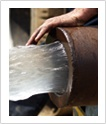
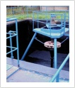
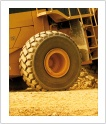
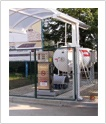
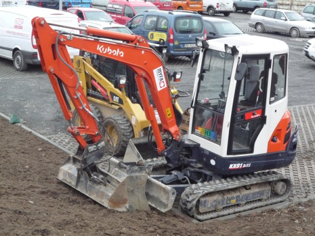
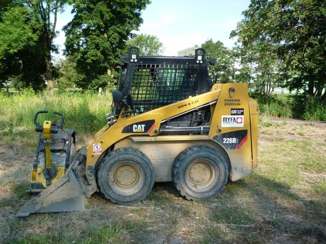
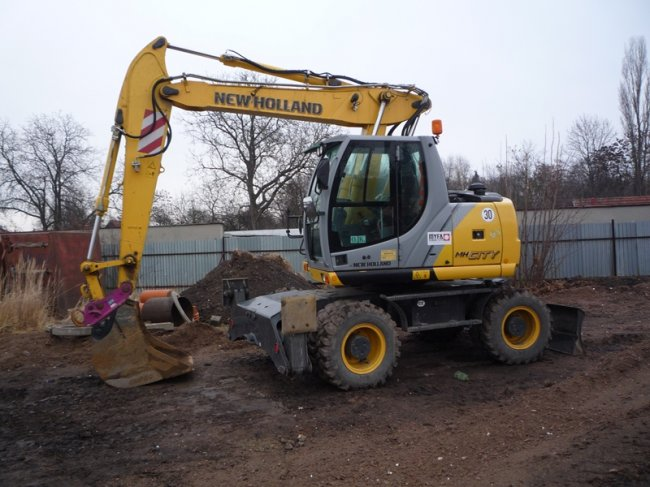
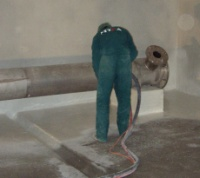
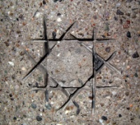
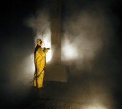
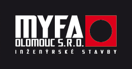
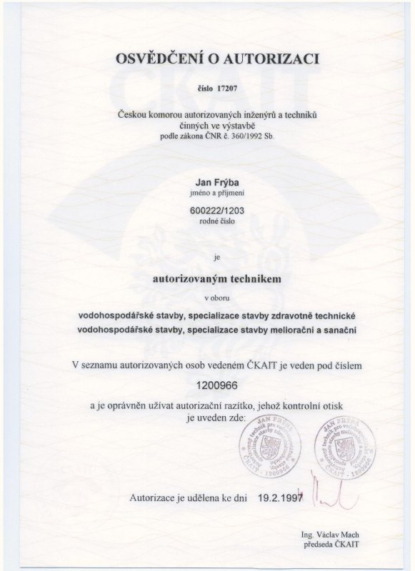
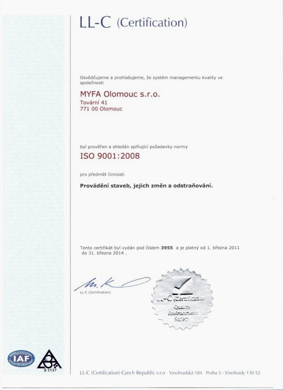
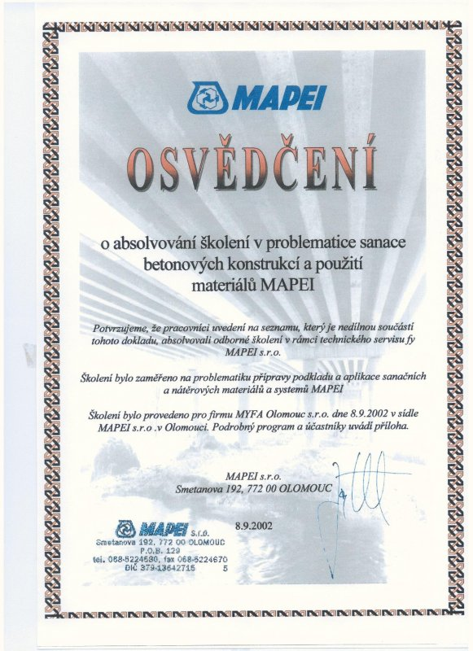
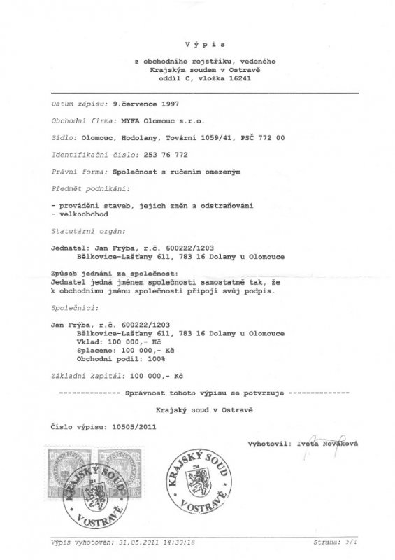
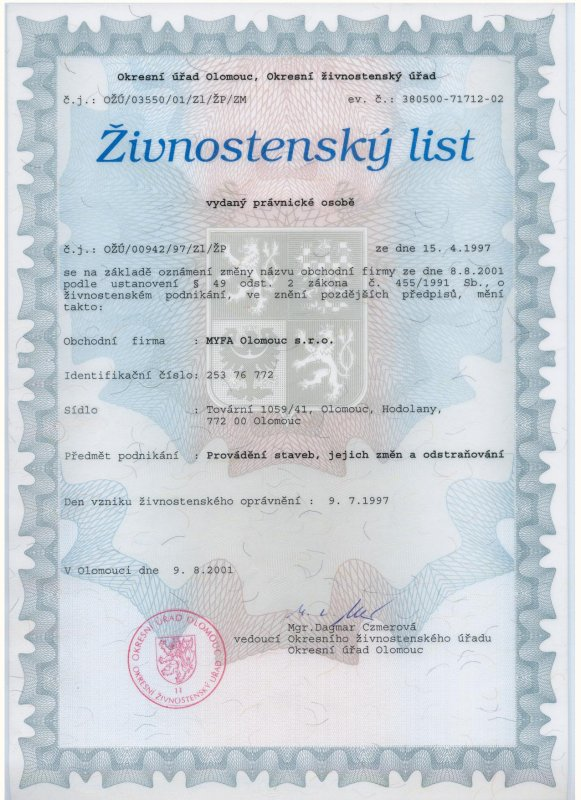
Neváhejte nám zavolat, napsat e-mail nebo nás osobně navštívit na uvedené adrese.
Dalimilova 74/53, 783 35 Olomouc - Chomoutov
Po–Pá: 7:00 – 15:30
IČO: 25838047 | DIČ: CZ25838047 | Doména: myfa-olomouc.cz
Vyplňte krátký formulář níže – ozveme se vám zpět v nejbližším možném termínu.